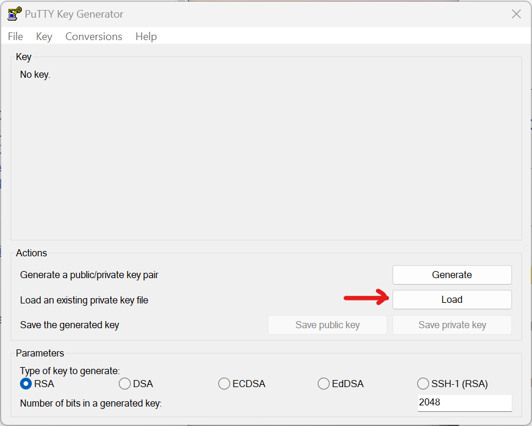
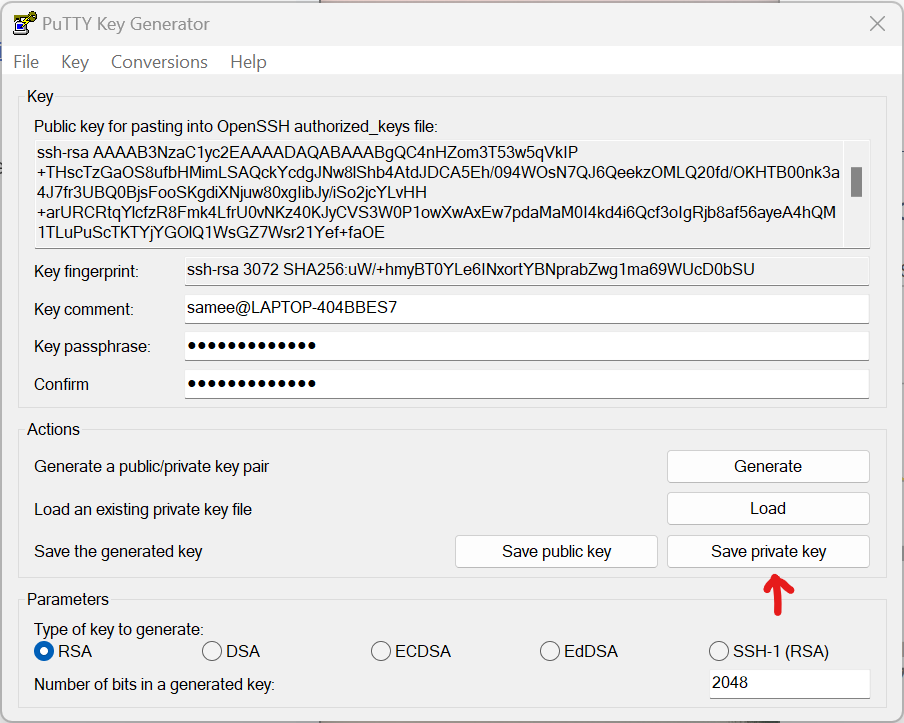
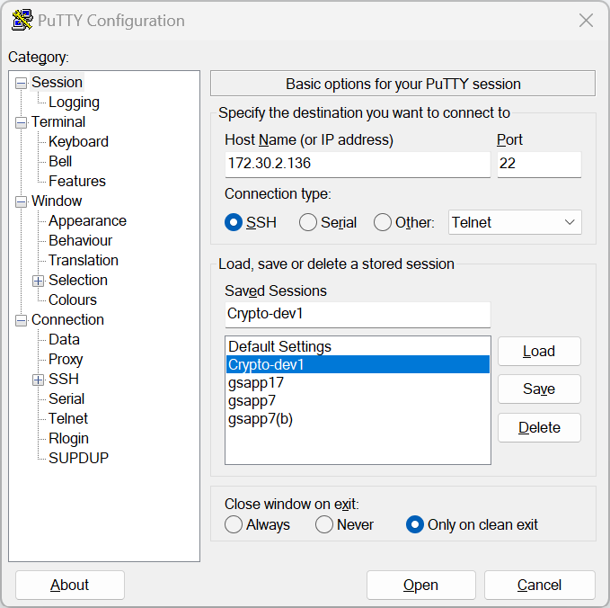
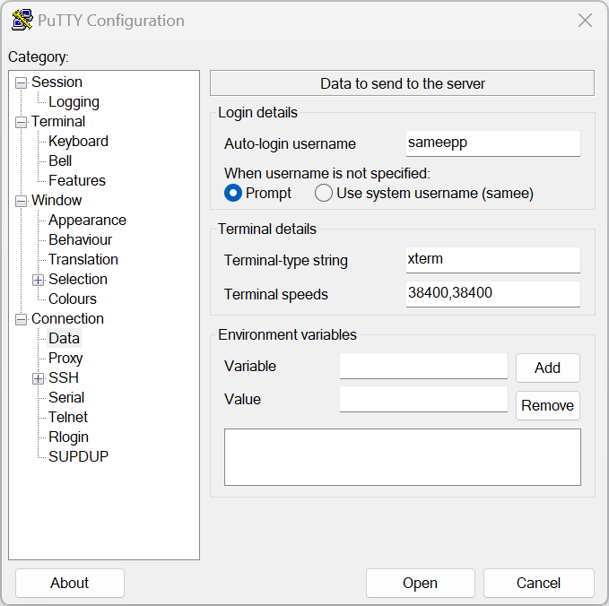
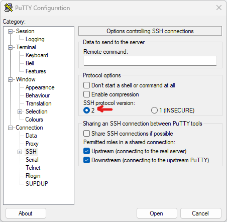
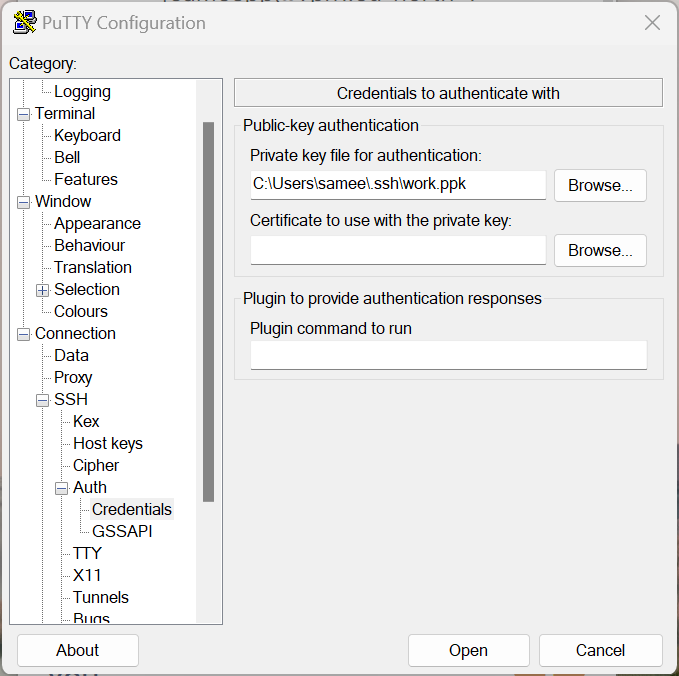
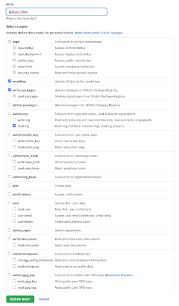

All.development setup.how to guide
Development Setup#
High-level view#
-
In order to develop in
cmampyou must run on one of ourdevservers, by creating a VPN connection to our VPC and then ssh-ing to adevserver from your laptop -
Don't waste time trying to setting up the dev env on your laptop since certain resources (e.g., AWS resources, DBs, etc) are not visible outside our VPN
-
If there is a problem with the
devservers (e.g., too slow, tools that you want that don't work, etc) we can make your dev env better, so that everyone can benefit
Configure bash for your laptop#
- Make sure you are connected to the VPN before proceeding
Linux and MacOS#
-
Locally on your laptop tweak your
.bashrcto add your server credentials:```bash
vi .bashrc
Append at the end.#
export CM_SSH_KEY=~/.ssh/cryptomatic.pem
E.g., export CM_SSH_KEY=~/.ssh/ck/saggese-cryptomatic.pem#
XYZ for your remote Linux username, e.g., saggese, danya, maxs#
export CM_USER=saggese export CM_IP=172.30.2.136 ```
-
For MacOS you might want to tweak
.bash_profile. After tweaking your bashrc, you need to restart the shell session withexit; bashor dosource ~/.bash
Windows#
-
Download and install
putty.exe,pscp.exe, andputtygen.exefrom the PuTTY Download Page -
Open
PuTTYgenand click on the load button  -
Locate the private SSH key that you have downloaded
-
Click the Save private key button to create the ppk file 
-
Open
PuTTY, under Session, enter your Hostname i.e. our server IP: 172.30.2.136
-
Under Connection, click Data and Enter your username as the Auto-login username 
-
Under SSH, choose 2 from the Preferred SSH Protocol Version 
-
Under SSH -> Auth -> Credentials, you will need to specify where your private key can be found
-
Remember, this is the ppk file you generated using
PuTTygenearlier -
Click the Browse to locate the file on your computer 
-
Under Sessions, type a name (such as "my site") in the Saved Sessions box and then click Save. Hit Open to Run the session
Configure .ssh for your laptop#
- To connect to the server use your previously generated private key, i.e. not the public key that the Infra team sends you back
- Move the public-private key pair to
~/.sshand setpemas the private key extension, see more aboutpemextension. E.g.,~/.ssh/cryptomatic.pem(private key) that you will use to connect. - Set the permissions for your private key
bash laptop> chmod 600 ~/.ssh/cryptomatic.pem -
Now you can connect to the server through a VPN (see
/docs/onboarding/ck.setup_vpn_and_dev_server_access.how_to_guide.md)```bash laptop> ssh -i $CM_SSH_KEY $CM_USER@$CM_IP
E.g., laptop> ssh -i ~/.ssh/cryptomatic.pem $CM_USER@$CM_IP ```
-
You can also pass the user and IP manually, but adding those exports above saves time in the long run.
Configure .ssh for the server#
sshinto the server withbash laptop> ssh -i $CM_SSH_KEY $CM_USER@$CM_IP- Your home directory should be under
/databash server> echo $HOME /data/saggese - The directory on the server should look like:
bash server> ls -l ~/.ssh/ total 16 -rw------- 1 saggese saggese 382 Nov 19 18:15 authorized_keys -rw------- 1 saggese saggese 381 Nov 25 17:41 cryptomatic.pem.pub -rw-r--r-- 1 saggese saggese 666 Nov 25 17:43 known_hosts - (Optional step) If that's not the case, talk to IT to copy the public ssh key to the server from your laptop.
Configure bash for the server (advanced)#
Configure bash#
Linux and MacOS#
- Now you want to configure the server
~/.bashand the environment to your preference. -
E.g., you might want to copy
.vimrc, pimp.bashrc```bash
Copy your hub keys to the dev server#
laptop> export CM_SSH_KEY=~/.ssh/cryptomatic/saggese-cryptomatic.pem laptop> export CM_USER=saggese laptop> export CM_IP=172.30.2.136
laptop> scp -i $CM_SSH_KEY ~/.ssh/id_rsa $CM_USER@$CM_IP:/data/$CM_USER/.ssh/id_rsa.gpsaggese.hub
laptop> scp -i ~/.ssh/cryptomatic/saggese-cryptomatic.pem ~/.ssh/id_rsa.pub saggese@172.30.2.136:/data/saggese/.ssh/id_rsa.gpsaggese.hub.pub
laptop> scp -i ~/.ssh/cryptomatic/saggese-cryptomatic.pem ~/.ssh/cryptomatic/id_rsa.cryptomtc.hub saggese@172.30.2.136:/data/saggese/.ssh/id_rsa.cryptomtc.github
laptop> scp -i ~/.ssh/cryptomatic/saggese-cryptomatic.pem ~/.ssh/cryptomatic/id_rsa.cryptomtc.hub.pub saggese@172.30.2.136:/data/saggese/.ssh/id_rsa.cryptomtc.github.pub ```
-
Tweak permissions on the server
bash server> ls -l ~/.ssh total 32 -rw------- 1 saggese saggese 382 Nov 19 18:15 authorized_keys -r-------- 1 saggese saggese 1679 Nov 25 17:40 cryptomatic.pem -r-------- 1 saggese saggese 381 Nov 25 17:41 cryptomatic.pem.pub -r-------- 1 saggese saggese 3243 Nov 30 17:54 id_rsa.cryptomtc.hub -r-------- 1 saggese saggese 732 Nov 30 17:54 id_rsa.cryptomtc.hub.pub -r-------- 1 saggese saggese 1675 Nov 30 17:48 id_rsa.gpsaggese.hub -r-------- 1 saggese saggese 389 Nov 30 17:50 id_rsa.gpsaggese.hub.pub -rw-r--r-- 1 saggese saggese 888 Nov 30 17:43 known_hosts
Windows#
-
Use the above steps from Configure bash of Linux and MacOS. Just use scp in the following way:
```bash laptop> scp -i $CM_SSH_KEY ~/.ssh/id_rsa $CM_USER@$CM_IP:/data/$CM_USER/.ssh/id_rsa.gpsaggese.hub
laptop> pscp -scp -i $PPK_KEY_GENERATED_USING_PUTTYGEN ~/.ssh/id_rsa $CM_USER@$CM_IP:/data/$CM_USER/.ssh/id_rsa.gpsaggese.hub ```
Configure tmux (optional)#
-
Create this file under
~/.tmux.confon the server. The prefix isCTRL-g. Copy-paste the code below into the.tmux.confand save the changes.```bash
Use C-x.#
set -g prefix C-x#
set -g prefix C-g unbind-key C-b bind-key C-g send-prefix
Set status bar.#
set -g status-bg black set -g status-fg white set -g status-left '#[fg=green]#H'
Use vi shortcuts.#
set-window-option -g mode-keys vi
set -g status-right "#[fg=blue]#S #I:#P #[fg=yellow]:: %d %b %Y #[fg=green]:: %l:%M %p :: #(date -u | awk '{print $4}')::"#
100k lines#
set-option -g history-limit 100000
Highlight active window.#
set-window-option -g window-status-current-bg red#
set -g window-status-current-style bg=red
Try to speed up the processing of shortcuts.#
set-option -g repeat-time 0 set -sg escape-time 0
To get notification when a command is done.#
TODO: This seems to give problems with my mac and being removed.#
set -g visual-content on#
setw -g monitor-content CMD_DONE#
For Mac only.#
Workaround to 'LSOpenURLsWithRole() failed with error -10810'.#
set -g default-command "reattach-to-user-namespace -l /bin/bash"#
set-option -g default-command "which reattach-to-user-namespace > /dev/null && #reattach-to-user-namespace -l $SHELL || $SHELL"#
```
Spruce up your environment#
-
If you have multiple users, you can decide which one to use
```bash
Test hub connection#
ssh -i ~/.ssh/id_rsa.gpsaggese.hub -T git@github.com _SSH_COMMAND="ssh -i ~/.ssh/id_rsa.gpsaggese.github" git clone git@github.com:gpsaggese/dotted_files.git
_SSH_COMMAND="ssh -i ~/.ssh/id_rsa.gpsaggese.github" git clone --recurse git@github.com:alphamatic/amp.git amp1 ```
Set up AWS#
-
We use AWS profile called
ck- It is used to access S3 bucket data and other AWS resources
- API credentials are included in the
ziparchive sent via e-mail during on-boarding process - Ask the Infra team if you have not obtained the credentials
-
Create dir with proper permissions:
bash > mkdir ~/.aws; chmod 700 ~/.aws -
Put the following into
~/.aws/config:bash [profile ck] region = eu-north-1 -
Put the following into
~/.aws/credentials:bash [ck] aws_access_key_id=*** aws_secret_access_key=*** aws_s3_bucket=cryptokaizen-data -
Note that AWS uses
[profile XYZ]vs[XYZ]in the two types of files (config and credentials), yes, this is insane - Change permissions to ready-only and only for your user since it contains
credentials:
bash > chmod 400 ~/.aws/* -
You should get to permissions that look like:
```bash saggese@ip-172-30-2-136:~$ ls -ld ~/.aws drwx------ 2 saggese saggese 4096 Dec 3 17:09 /data/saggese/.aws
saggese@ip-172-30-2-136:~$ ls -l ~/.aws total 8 -r-------- 1 saggese saggese 32 Dec 3 17:08 config -r-------- 1 saggese saggese 403 Dec 3 17:09 credentials ```
-
Test the access to the S3 bucket
- For the ck:
bash > aws s3 ls s3://cryptokaizen-data --profile ck PRE daily_staged/ PRE db_archive/ PRE historical/ PRE reorg/ PRE unit_test/
- For the ck:
-
Test accessing AWS ECR to pull containers:
```bash
eval $(aws ecr get-login --profile am --no-include-email --region us-east-1) WARNING! Using --password via the CLI is insecure. Use --password-stdin. WARNING! Your password will be stored unencrypted in /data/saggese/.docker/config.json. Configure a credential helper to remove this warning. See https://docs.docker.com/engine/reference/commandline/login/#credentials-store
Login Succeeded ```
Clone the Hub repo#
SSH Keys#
- For hub you can use your key otherwise you can generate an ssh key for hub
- Note:
- You can use any SSH key, even a "personal" one that one uses for his/her projects
- In practice, the logic is "user authenticates with GH, we tell GH to grant access to a private repo, GH is happy"
- Typically you can save the Hub authentication in
~/.ssh/id_rsaand~/.ssh/id_rsa.pub - Note: make sure permissions are read-only, otherwise change permissions, e.g.,
chmod 400 ~/.ssh/id_ed25519
Git clone#
- In order to use our automation scripts, the path to local copy of the repos
needs look like this
${HOME}/src/{REPO_NAME}{IDX}, e.g.,/data/saggese/src/cmamp1. - Clone a repo using an SSH key, we do not use HTTPS
- Clone the repo with:
bash > mkdir ~/src > cd ~/src # In general form. > git clone --recursive git@github.com:causify-ai/{repo_name}.git ~/src/{repo_name}{index} # Example for cmamp. > git clone --recursive git@github.com:causify-ai/cmamp.git ~/src/cmamp1 - You can have multiple cloned repos like
cmamp2,cmamp3and so on to work on unrelated changes at the same time -
If the repo contains submodules we need to checkout master in all submodules.
```bash
Before.#
git status HEAD detached at bd69850bb nothing to commit, working tree clean
In general form.#
cd {submodule} git checkout master git pull
Example for
orangewhich containscmampwhich containshelpers.#cd amp git checkout master git pull cd helpers_root git checkout master git pull
After.#
git status On branch master Your branch is up to date with 'origin/master'.
Changes not staged for commit: (use "git add
..." to update what will be committed) (use "git restore ..." to discard changes in working directory) modified: helpers_root (new commits) ```
Set up the thin environment#
- Build the thin environment we use to call invoke and Docker. For all the repos
we use the thin environment from the
helpersrepo, i.e. to build one we need to run:bash > cd amp (only if amp is submodule) > cd helpers_root > ./dev_scripts_helpers/thin_client/build.py - This script to build the environment is run rarely when the dependencies are changed.
- This environment is shared by multiple repos (e.g., all the
cmampandtutorials), so once you build the environment you can use it for all the repos and for multiple clients
Activate the thin environment#
- It is okay to skip this step as long as you use
tmux. The thin environment is activated automatically within atmuxsession. - To activate the thin environment, run the
setenv.shscript. The script is located underdev_scripts_{repo_name}/thin_client, e.g.:bash > source dev_scripts_cmamp/thin_client/setenv.sh > source dev_scripts_orange/thin_client/setenv.sh
Create a tmux session#
-
Create a soft link. The cmd below will create a file
~/go_{repo_name}.py```bash
dev_scripts_{repo_name}/thin_client/tmux.py --create_global_link ```
-
Create a tmux session. Choose
indexbased on the dir name, e.g.,--index 1if the dir name is~/src/cmamp1.```bash
dev_scripts_{repo_name}/thin_client/tmux.py --index 1 ```
-
You need to create the tmux environment once per client and then you can re-connect with:
```bash
Check the available environments.#
tmux ls cmamp1: 4 windows (created Fri Dec 3 18:27:09 2021) (attached)
Attach an environment.#
tmux attach -t cmamp1 ```
Configure gh#
-
We enjoy using Hub CLI
- Create a Personal Access Token (classic) on Hub following the official guide
-
Put the following permissions:

-
Create personal access token (aka PAT) as done above and save it to
~/hub_pat.txt - You can login with a single command
bash > cat ~/hub_pat.txt | gh auth login --hostname github.com --with-token - Sometimes you need to create the file to make
ghhappybash > touch ~/.config/gh/config.yml - Check the current authentication status of
gh:bash > gh auth status hub.com Logged in to hub.com as gpsaggese (/Users/saggese/.config/gh/hosts.yml) operations for github.com configured to use ssh protocol. Token: *******************
Fix permissions#
- Sometimes for whatever reason a file is created by
rootwhich prevents executing certain commands being a non-root user w/o sudo privileges - To change permissions we need sudo privileges that we do not have outside a
Docker container but we have inside a Docker container
```bash
(amp.client_venv) dan@ip-172-31-12-40:~/src/cmamp1$ gh auth login
? What account do you want to log into? Hub.com
? What is your preferred protocol for operations? SSH
? Upload your SSH public key to your Hub account? Skip
? How would you like to authenticate Hub CLI? Paste an authentication token
Tip: you can generate a Personal Access Token here https://hub.com/settings/tokens
The minimum required scopes are 'repo', 'read:org'.
? Paste your authentication token: ******
- gh config set -h hub.com git_protocol ssh Configured protocol open /data/dan/.config/gh/config.yml: permission denied (amp.client_venv) dan@ip-172-31-12-40:~/src/cmamp1$ cat ~/hub_pat.txt | gh auth login --hostname github.com --with-token open /data/dan/.config/gh/config.yml: permission denied ```
- Get inside the docker container using
i docker_bash - Change dir using
cd ~/.config - Run
sudo chown -R username:username ghwhere username is your username inside the container, e.g.user_1022:user_1022 - Run
ls -l gh | grep rootif nothing, it's a good sign - Close container printing
exitor ctrl+D - Log in again using
gh auth loginand follow the instructions above - Check your auth status using
gh auth status
Begin working#
- Conceptually the steps are:
- Clone a repo in
~/src/...- You can have as many clients as you want (
cmamp1,cmamp2, ...,helpers1, ...)
- You can have as many clients as you want (
- Build the "thin" environment:
- Needs to be done only once for all your clients
bash > cd helpers_root > ./dev_scripts_helpers/thin_client/build.py
- Needs to be done only once for all your clients
- Start a tmux session
- Choose
indexbased on folder name, e.g.,--index 1if repo name is~/src/cmamp1bash > dev_scripts_{repo_name}/thin_client/tmux.py --index 1
- Choose
- Activate environment:
- It is activated automatically in all the tmux sessions
- Otherwise, run:
bash > source dev_scripts_{repo_name}/thin_client/setenv.sh
- Pull
cmampdocker images:- This image is shared all your clients (actually all users on the server
use the same image)
bash > i docker_pull Digest: sha256:308d52a0354845d1a2aa2014282efa66864329e7e22bf15dad518c219b5d5a3d Status: Downloaded newer image for 665840871993.dkr.ecr.us-east-1.amazonaws.com/cmamp:dev 665840871993.dkr.ecr.us-east-1.amazonaws.com/cmamp:dev
- This image is shared all your clients (actually all users on the server
use the same image)
- Check
docker_bash:bash > i docker_bash INFO: > cmd='/data/saggese/src/venv/helpers.client_venv/bin/invoke docker_bash' ## docker_bash: IMAGE=665840871993.dkr.ecr.us-east-1.amazonaws.com/helpers:dev \ docker-compose \ --file /data/saggese/src/helpers1/devops/compose/docker-compose.yml \ --env-file devops/env/default.env \ run \ --rm \ --user $(id -u):$(id -g) \ app \ bash user_1005@9e4373e01213:/app$- Exit the container with
exitand get back to the server prompt
- Exit the container with
- Run regressions:
bash > i run_fast_tests- If you can run all the regressions without errors, then you are totally set up to start developing
- Clone a repo in